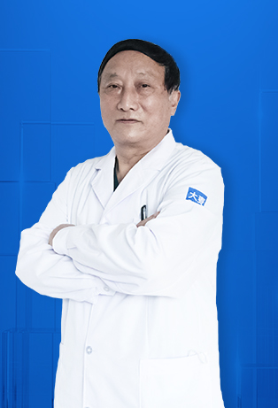
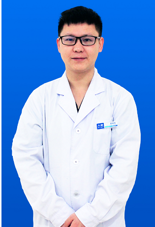
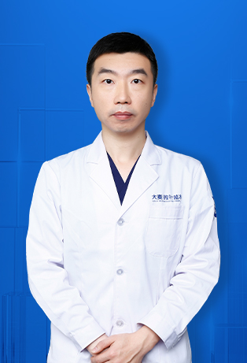
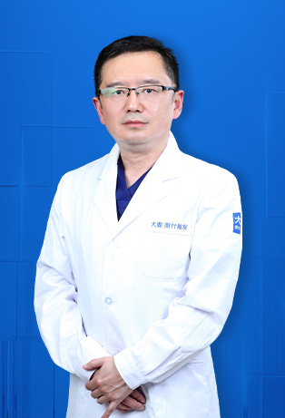

Our Key Doctors
Expert surgeons and specialists with years of experience in microneedle hair transplant

Yin Canchang
Associate Chief PhysicianDirector of Barley Microneedle Hair Transplant Beijing Branch, Doctor of Harbin Barley Hospital Internet Hospital
Specialty: Hair transplant surgery repair

Wang Xiaoping
DoctorTechnical Director of Barley Microneedle Hair Transplant Beijing Branch
Specialty: Microneedle artistic hair transplant, large area microneedle hair transplant, microneedle density hair transplant

Feng Yuping
DoctorTechnical Director of Barley Microneedle Hair Transplant Beijing Branch
Specialty: Microneedle hairline adjustment, FGF dual growth factor microneedle hair transplant, large area microneedle hair transplant

Song Hongwei
DoctorDirector of Barley Microneedle Hair Transplant Beijing Branch
Specialty: Microneedle hairline adjustment, FGF dual growth factor microneedle hair transplant, large area microneedle hair transplant

Li Shijun
DoctorDirector of Barley Microneedle Hair Transplant Beijing Branch
Specialty: Microneedle hairline adjustment, FGF dual growth factor microneedle hair transplant, large area microneedle hair transplant

Guan Jueyin
DoctorDirector of Barley Microneedle Hair Transplant Chengdu Branch
Specialty: Microneedle hair transplant, microneedle artistic hair transplant, large area microneedle hair transplant

Duan Longwen
DoctorTechnical Director of Barley Microneedle Hair Transplant Nanchang Branch, Doctor of Harbin Barley Hospital Internet Hospital
Specialty: No-shave hair extraction, large area hair extraction, FGF dual growth factor hair transplant

Gao Falu
DoctorDirector of Barley Microneedle Hair Transplant Jinan Branch
Specialty: Microneedle hairline adjustment, microneedle density hair transplant, FGF dual growth factor microneedle hair transplant

Xiong Jingmin
DoctorDirector of Barley Microneedle Hair Transplant Nanchang Branch
Specialty: Microneedle density hair transplant, FGF dual growth factor, large area hair transplant

Liu Ziheng
DoctorDirector of Barley Microneedle Hair Transplant Qingdao Branch
Specialty: Microneedle hair transplant, FGF dual growth factor microneedle hair transplant, large area microneedle hair transplant

Ma Guicai
DoctorDirector of Barley Microneedle Hair Transplant Shanghai Branch, Doctor of Harbin Barley Hospital Internet Hospital
Specialty: Microneedle density hair transplant, microneedle artistic hair transplant, scar hair transplant

Fu Huagang
DoctorTechnical Director of Barley Microneedle Hair Transplant Shanghai Branch
Specialty: Microneedle density hair transplant, microneedle artistic hair transplant, scar hair transplant

Ge Chunchao
DoctorTechnical Director of Barley Microneedle Hair Transplant Shenyang Branch
Specialty: Microneedle hair transplant, microneedle density hair transplant, microneedle artistic hair transplant

Wang Yue
DoctorDirector of Barley Microneedle Hair Transplant Xi'an Branch
Specialty: Microneedle hairline adjustment, microneedle density planting, microneedle large area planting

Zhong Chaochao
Associate Chief Physician of Plastic SurgeryDirector of Barley Microneedle Hair Transplant Zhengzhou Branch
Specialty: Microneedle hair transplant, sideburns hair transplant, eyebrow transplant

Fang Jianwen
Associate Chief SurgeonTechnical Director of Barley Microneedle Hair Transplant Shanghai Branch, Doctor of Harbin Barley Hospital Internet Hospital
Specialty: Large area microneedle hair transplant, microneedle density hair transplant, microneedle artistic hair transplant

Cui Jinxiu
DoctorDoctor of Barley Microneedle Hair Transplant Beijing Branch
Specialty: Artistic planting, microneedle density hair transplant

Lin Wenxiang
DoctorDoctor of Barley Microneedle Hair Transplant Guangzhou Branch
Specialty: Microneedle hairline adjustment, large area microneedle hair transplant, microneedle density hair transplant

Liu Cuiyun
DoctorHair transplant doctor of Barley Microneedle Hair Transplant Beijing Branch, Doctor of Harbin Barley Hospital Internet Hospital
Specialty: Comprehensive treatment of hair loss

Fan Meifang
DoctorHair transplant doctor of Barley Microneedle Hair Transplant Beijing Branch, Doctor of Harbin Barley Hospital Internet Hospital
Specialty: Comprehensive treatment of hair loss, hairline microneedle planting, large area microneedle hair transplant

Tang Qianrong
DoctorHair transplant doctor of Barley Microneedle Hair Transplant Beijing Branch, Doctor of Harbin Barley Hospital Internet Hospital
Specialty: Hairline microneedle planting, large area hair loss microneedle hair transplant, microneedle density hair transplant